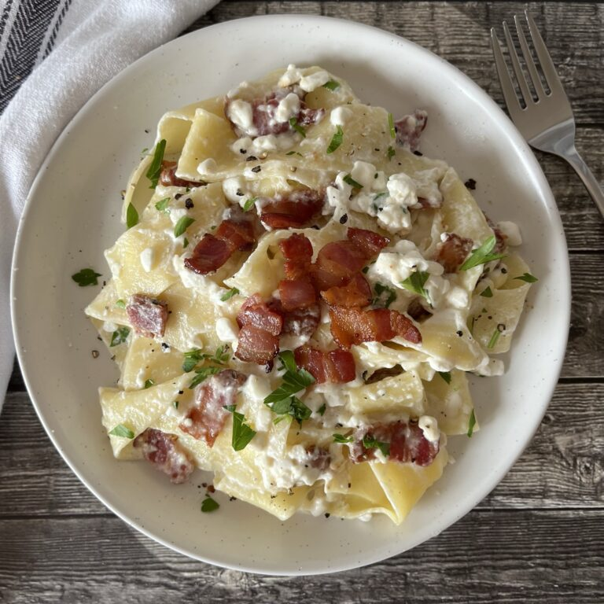

Noodle's Bacon and Cottage Cheese

Description
This irresistible noodle dish is a popular recipe in the Hungarian cuisine!
Ingredients
- Egg noodles
- Cured bacon
- Cottage cheese and sour cream
Steps
- Slice bacon into bite size pieces
- Cook bacon until crispy and set aside
- While bacon is cooking boil the noodles
- Strain noodles and transfer back into pot
- Add in bacon and mix in cottage cheese and sour cream
- Serve while hot!